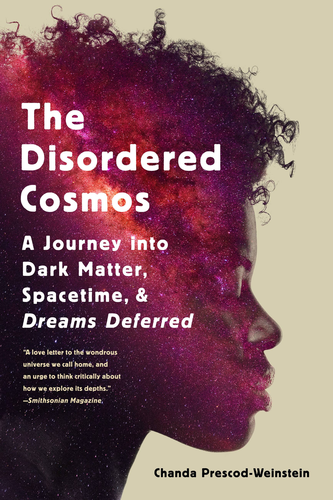

47:36 · 3 OPERE
Aggiornamenti vari sull'attuale momento storico.
Il filo del discorso
Il relatore raccoglie notizie e immagini della fase pandemica per sviluppare una critica alla comunicazione pubblica e alle restrizioni. Parla del rapporto fra disoccupazione e mortalità, di terapie sperimentali, esenzioni dalle mascherine, adattamento sociale e controllo del pensiero, richiamando The Rape of the Mind di Joost Meerloo. Una lunga digressione contesta un discorso di Angela Merkel attraverso riferimenti alla fisica; un’altra critica la presentazione di un libro di Chanda Prescod-Weinstein, che il relatore dichiara di non avere letto. Pubblicità storiche e una testimonianza individuale sul malessere dopo la vaccinazione introducono il finale dedicato alla libertà e a Patrick Henry. La scheda distingue questa lettura polemica dai riscontri: una review sui gas fisiologici non dimostra che le mascherine chirurgiche provochino intossicazione da CO₂, un piccolo studio non prova una efficacia del 95 per cento e malattie pregresse non escludono una morte causata dal COVID-19. Le accuse a persone, istituzioni e stampa restano attribuite e non sono trattate come fatti accertati.
I libri nel discorso
The Rape of the Mind
Copertina: World Publishing Company · 1956 · testo inglese
Fotografia della copertina dell’edizione originale del 1956, fornita dal catalogo OpenLibrary. I segni d’usura appartengono all’esemplare fotografato. Edizione del video non accertata.
Joost Meerloo e The Rape of the Mind, anno 1956 e menticidio riconoscibili; autore olandese, non danese.
Passaggio 26:16 ↗ · Fonti e libro ↗
The Disordered Cosmos: A Journey into Dark Matter, Spacetime, and Dreams Deferred
Identificazione probabile
Copertina: Bold Type Books, 9 marzo 2021, 336 pagine nel catalogo, formato ebook ISBN 9781541724693. Immagine autentica della edizione digitale nel catalogo Hachette, non identificazione di una copia cartacea presente nel video. Edizioni paperback e hardcover hanno ISBN propri.
Immagine autentica dell’opera, controllata visivamente; l’edizione di riferimento non è attribuita al filmato.
Autrice e descrizione editoriale identificabili; titolo non pronunciato, riferimento probabile. Il relatore dichiara di non avere letto il libro.
Passaggio 38:11 ↗ · Fonti e libro ↗
Give Me Liberty or Give Me Death. Discorso alla Seconda Convenzione della Virginia
Facsimile del testo ricostruito: Facsimile delle pagine 122–123 di William Wirt, Sketches of the Life and Character of Patrick Henry, seconda edizione, 1818, conservate dalla Library of Virginia. Discorso tenuto nel 1775, ricostruito da Wirt per la biografia 1817; non verbale contemporaneo.
Riproduzione autentica delle due pagine 122–123, con chiusa del discorso leggibile a destra. Non è un manoscritto di Henry, una copertina o la vignetta del video. La ricostruzione tarda e l’incertezza sulle esatte parole pronunciate sono dichiarate dall’archivio.
Patrick Henry, Virginia 1775 e Give Me Liberty or Give Me Death sono richiami espliciti al discorso.
Passaggio 46:31 ↗ · Fonti e libro ↗